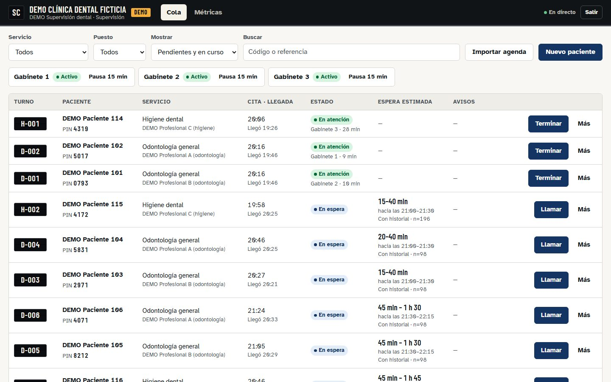
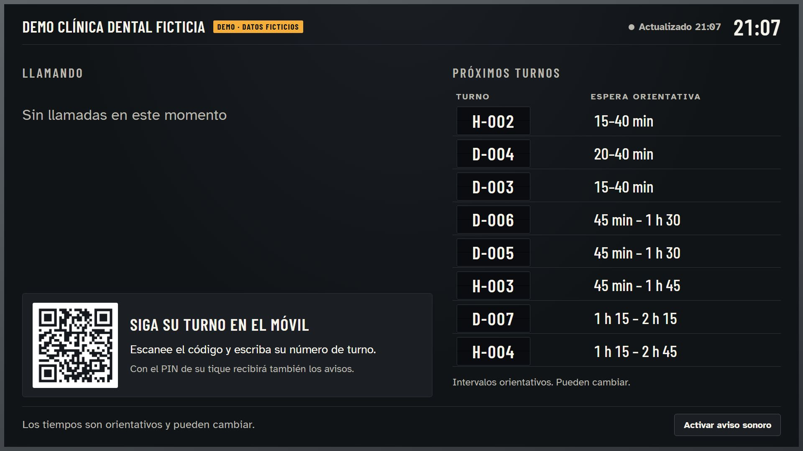
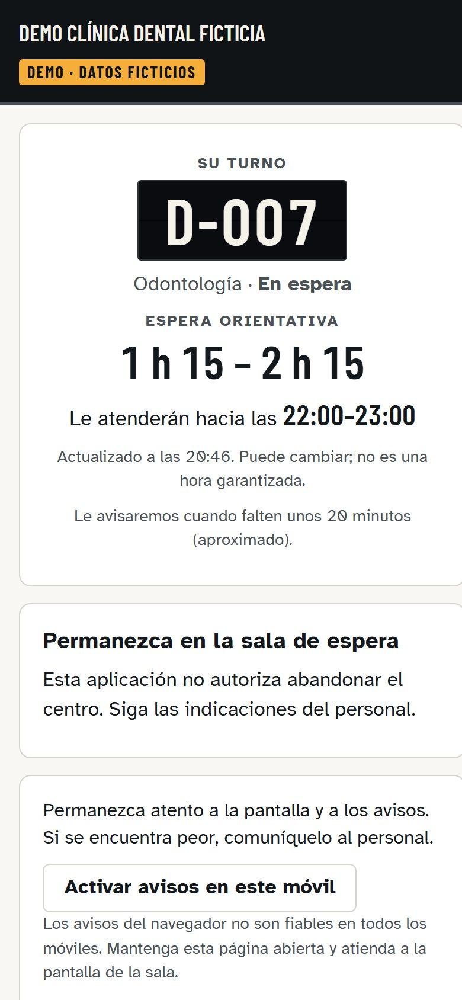

Que cada paciente sepa cuándo le toca.
SalaClara muestra en la pantalla de la sala y en el móvil del paciente a quién se llama, adónde ir y un intervalo de espera que se actualiza solo. Y le avisa unos 20 minutos antes de su turno.
- Sin instalar nada: funciona en el navegador
- Sin datos personales en la pantalla
- Piloto de 6-8 semanas con resultados medidos
La espera no se hace larga por los minutos. Se hace larga por no saber.
Salas llenas, gente de pie, la misma pregunta en recepción cada diez minutos y pacientes que no oyen su nombre. SalaClara no acelera la consulta: hace que la espera sea informada, para que el paciente se organice y el personal trabaje sin interrupciones.
El recorrido de un paciente, en el tablero
- 09:02Llega y escanea el QR de la sala. Escribe su turno y ve su espera. Con el PIN de su tique, activa los avisos.D-015
- 09:03Ve un intervalo, no una promesa. «35–50 min · hacia las 09:40–09:55». Se recalcula con cada llamada, pausa o consulta que se alarga.35–50 min
- 09:31Preaviso unos 20 minutos antes. Le da tiempo a volver si el centro le permite esperar fuera. Confirma con un toque.Preaviso
- 09:47Llamada en la pantalla y en el móvil. Código y destino, con un aviso sonoro moderado y su equivalente visual.Gabinete 1
Ejemplo ilustrativo. Los tiempos son orientativos y dependen de cada centro.
Para recepción y profesionales: un toque por paciente
- Llamar, iniciar, terminar desde el panel, con la acción principal siempre a la vista.
- Turno con PIN y tique impreso al dar la vez; el paciente sin móvil sigue la pantalla.
- Avisos que no llegan, a la vista: el personal aplica su protocolo; nadie sale de la cola por un aviso fallido.
- El personal manda: reordenar exige motivo y queda registrado; el sistema nunca cancela a nadie.

Lo que ve la sala, lo que ve el móvil


Honesto por diseño
- Intervalos, no cuentas atrás
- Se calculan con la duración real de las consultas, dando más peso al ritmo de hoy, y se mide su acierto.
- Si faltan datos, lo dice
- Si se corta la conexión, la pantalla lo indica y deja de prometer tiempos. Nadie desaparece de la cola.
- La pantalla no sabe nombres
- Solo recibe código, destino y espera. Lo personal nunca viaja a la sala.
- Sin decisiones clínicas
- Informa y avisa. El orden de atención lo decide el personal.
Sin doble registro
El paciente se registra donde siempre. SalaClara solo necesita saber cuándo llega, cuándo se le llama, cuándo empieza y cuándo termina su atención.
| Cómo se conecta | Para quién | Trabajo extra del personal |
|---|---|---|
| Conector con su programa de citas o sistema del hospital | Centros cuyo programa lo permite | Ninguno |
| Importación de la agenda del día (CSV) | Casi cualquier clínica, desde el primer día | Un toque: «Registrar llegada» |
| El panel como sistema de turnos | Centros sin programa o con dispensador de números | Sustituye al papel, no lo duplica |
Para quién
- Clínicas dentales, con gabinetes, sillones y tratamientos de duración variable.
- Centros médicos y policlínicas, con varias consultas y especialidades.
- Hospitales privados, por servicio: consultas externas, diagnóstico por imagen, extracciones.
- Cualquier negocio con cita donde la gente espera sin saber cuánto.
Piloto gratuito de 6 a 8 semanas
- Medimos dos semanas cómo es hoy la espera.
- Instalamos la pantalla y el panel en un circuito y formamos al personal.
- Medimos de nuevo: preguntas en recepción, llamadas perdidas y acierto de las estimaciones.
- Con los resultados en la mano, usted decide.
¿Prefiere escribirnos? hola@liriacrea.com
Preguntas frecuentes
¿Hay que instalar algo en los ordenadores de la clínica?
No. El panel se usa desde el navegador y la pantalla de la sala es una página web que se abre en el televisor o en un pequeño reproductor HDMI. Antes de empezar probamos su televisor; si no sirve, le proponemos un reproductor económico.
¿Qué ve la gente en la pantalla de la sala?
Solo el código del turno, el destino al que debe ir y una espera orientativa. Nunca nombres, teléfonos ni datos clínicos. En urgencias, solo una referencia por servicio, sin posiciones.
¿Cómo accede el paciente desde su móvil?
Escanea el QR de la sala y escribe su número de turno para consultar la espera. Con el PIN de 4 cifras de su tique recibe además los avisos. Sin cuentas, sin descargar aplicaciones.
¿Y si el paciente no tiene móvil?
Sigue su turno en la pantalla de la sala, como siempre. El móvil es opcional y el personal conserva su forma habitual de llamar.
¿Se conecta con nuestro programa de citas?
Desde el primer día se puede importar la agenda en CSV. Si su programa permite enviar las señales de llegada, llamada, inicio y fin, la conexión evita cualquier doble registro.
¿El preaviso garantiza la hora de atención?
No. Es un aviso orientativo para que el paciente se prepare; la llamada definitiva llega cuando el profesional está listo. El umbral, unos 20 minutos por defecto, se configura por centro.
¿Y la protección de datos?
SalaClara funciona con el mínimo de datos: la pantalla no recibe ninguno personal y el móvil del paciente no necesita cuenta. Antes de trabajar con datos reales se firma el contrato de encargado del tratamiento y se revisa con su centro qué información se usa.
¿Cuánto cuesta?
El piloto es gratuito. Después, una cuota mensual por centro que se acuerda según el tamaño y las integraciones.